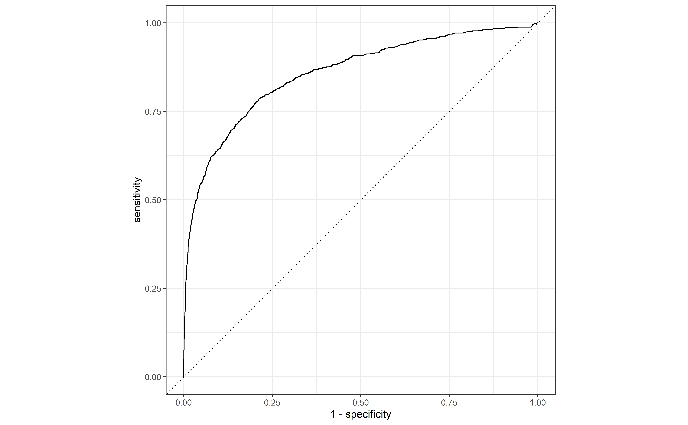

library(tidymodels)
library(readr)
hotels <-
read_csv("https://tidymodels.org/start/case-study/hotels.csv") %>%
mutate(across(where(is.character), as.factor))
dim(hotels)[1] 50000 23Dans ce lab, nous allons travailler sur un jeu de données qui contient des informations sur des réservations d’hôtels. Nous allons essayer de prédire si une réservation avait des enfants. Pour cela, nous allons utiliser des méthodes de classification.
library(tidymodels)
library(readr)
hotels <-
read_csv("https://tidymodels.org/start/case-study/hotels.csv") %>%
mutate(across(where(is.character), as.factor))
dim(hotels)[1] 50000 23Nous pouvons jeter un coup d’oeil aux données:
Rows: 50,000
Columns: 23
$ hotel <fct> City_Hotel, City_Hotel, Resort_Hotel, R…
$ lead_time <dbl> 217, 2, 95, 143, 136, 67, 47, 56, 80, 6…
$ stays_in_weekend_nights <dbl> 1, 0, 2, 2, 1, 2, 0, 0, 0, 2, 1, 0, 1, …
$ stays_in_week_nights <dbl> 3, 1, 5, 6, 4, 2, 2, 3, 4, 2, 2, 1, 2, …
$ adults <dbl> 2, 2, 2, 2, 2, 2, 2, 0, 2, 2, 2, 1, 2, …
$ children <fct> none, none, none, none, none, none, chi…
$ meal <fct> BB, BB, BB, HB, HB, SC, BB, BB, BB, BB,…
$ country <fct> DEU, PRT, GBR, ROU, PRT, GBR, ESP, ESP,…
$ market_segment <fct> Offline_TA/TO, Direct, Online_TA, Onlin…
$ distribution_channel <fct> TA/TO, Direct, TA/TO, TA/TO, Direct, TA…
$ is_repeated_guest <dbl> 0, 0, 0, 0, 0, 0, 0, 0, 0, 0, 0, 0, 0, …
$ previous_cancellations <dbl> 0, 0, 0, 0, 0, 0, 0, 0, 0, 0, 0, 0, 0, …
$ previous_bookings_not_canceled <dbl> 0, 0, 0, 0, 0, 0, 0, 0, 0, 0, 0, 0, 0, …
$ reserved_room_type <fct> A, D, A, A, F, A, C, B, D, A, A, D, A, …
$ assigned_room_type <fct> A, K, A, A, F, A, C, A, D, A, D, D, A, …
$ booking_changes <dbl> 0, 0, 2, 0, 0, 0, 0, 0, 0, 0, 0, 0, 0, …
$ deposit_type <fct> No_Deposit, No_Deposit, No_Deposit, No_…
$ days_in_waiting_list <dbl> 0, 0, 0, 0, 0, 0, 0, 0, 0, 0, 0, 0, 0, …
$ customer_type <fct> Transient-Party, Transient, Transient, …
$ average_daily_rate <dbl> 80.75, 170.00, 8.00, 81.00, 157.60, 49.…
$ required_car_parking_spaces <fct> none, none, none, none, none, none, non…
$ total_of_special_requests <dbl> 1, 3, 2, 1, 4, 1, 1, 1, 1, 1, 0, 1, 0, …
$ arrival_date <date> 2016-09-01, 2017-08-25, 2016-11-19, 20…Question 1: Déterminez la proportio de réservations qui ont des enfants.
Commencez par diviser les données en un ensemble d’entraînement et un ensemble de test. Utilisez 75% des données pour l’entraînement. Assurez-vous que les proportions de réservations avec enfants sont les mêmes dans les deux ensembles.
Dans cet exemple, nous avons un nombre important de données. Il est donc assez probable que les données utilisées pour l’entrainement soient représentatives de l’ensemble des données. Nous n’allons donc pas utiliser de validation croisée (avec 10 rééchantillonages). Nous allons simplement séparer les données entrainement en un ensemble d’entrainement et un ensemble de validation.
Pour cela, utilisez la fonction validation_split pour diviser les données d’entrainement en deux ensembles: un ensemble d’entrainement et un ensemble de validation. Utilisez 80% des données pour l’entrainement.
Au final, nous aurons donc trois ensembles de données:
Warning: `validation_split()` was deprecated in rsample 1.2.0.
ℹ Please use `initial_validation_split()` instead.Nous cherchons à déterminer si une réservation a des enfants. Il s’agit d’un problème de classification binaire. Nous allons commencer par utiliser une régression logistique.
Configurez un modèle de regression logistique en utilisant la fonction logistic_reg(). Utilisez la fonction set_engine() pour spécifier que vous voulez utiliser la fonction glm().
Créez une recette pour le modèle en utilisant la fonction recipe().
Nous allons utiliser les recettes suivantes:
step_date(): pour créer les variable de l’année, du mois et du jour de la semainestep_holiday(): pour créer une variable qui indique si la réservation a été faite pendant une période de vacances. Nous vous avons fourni une liste de vacances dans le fichier de réponse (voir ci-dessous). Vous pouvez indiquer d’utiliser cette liste avec step_holiday(arrival_date, holidays = holidays)step_rm(): pour supprimer les variables arrival_dateNous allons également transformer les variables catégorielles en dummy variables et les variables numériques en variables centrées et réduites.
step_dummy() pour convertir les variables catégorielles (all_nominal_predictors()) en variables binairesstep_zv() permet d’enlever les variables qui ne contiennent qu’une unique valeur (all_predictors())step_normalize() pour centrer et réduire les variables numériques (all_numeric_predictors())workflowCréez un workflow en utilisant la fonction workflow(). Ajoutez-y la recette et le modèle.
Entraînez le modèle en utilisant la fonction fit().
Warning: glm.fit: des probabilités ont été ajustées numériquement à 0 ou 1Utilisez la fonction predict() pour obtenir les prédictions du modèle sur l’ensemble de validation.
Générez une courbe ROC pour évaluer le modèle.

Nous allons maintenant essayer un modèle de Random Forest. Il s’agit d’un modèle plus complexe que la régression logistique. Le Random Forest est un modèle ensembliste qui combine plusieurs arbres de décision.
Nous allons utiliser le modèle suivant:
Nous avons deux paramètre à otpimiser: mtry et min_n. Nous allons utiliser la fonction tune_grid() pour optimiser ces paramètres.
La recette pour ce modèle est un peu plus simple que pour la régression logistique. Vous pouvez utiliser la recette suivante:
Créez un workflow pour ce modèle, qui contient la recette et le modèle.
Le paramètre mtry est le nombre de variables à considérer à chaque division d’un noeud. il est donc compris entre 1 et le nombre de variable. Le paramètre min_n est le nombre minimum d’observations dans un noeud terminal.
Créez une grille de recherche pour ces paramètres. Faites en sorte que mtry prenne 5 valeurs différentes et que min_n prenne 5 valeurs différentes également, pour un total de 25 combinaisons. Comme le paramètre mtrydépend du nombre de variables, il faut lui préciser les bornes manuellement. Le nombre de colonne peut être obtenu à l’aide de la fonction suivante:
Il est ensuite possible de préciser la range avec mtry(range = c(1, n_col - 1)).
Nous pouvons maintenant faire une recherche de grille pour trouver les meilleurs paramètres. Nous allons utiliser la fonction tune_grid() pour cela. Le set de validation est utiliser pour trouver la meilleure combinaison.
On peut maintenant voir quelle est la meilleure combinaison de paramètres.
# A tibble: 5 × 8
mtry min_n .metric .estimator mean n std_err .config
<int> <int> <chr> <chr> <dbl> <int> <dbl> <chr>
1 14 2 roc_auc binary 0.918 1 NA Preprocessor1_Model2
2 14 21 roc_auc binary 0.916 1 NA Preprocessor1_Model5
3 14 40 roc_auc binary 0.915 1 NA Preprocessor1_Model8
4 27 2 roc_auc binary 0.913 1 NA Preprocessor1_Model3
5 27 21 roc_auc binary 0.912 1 NA Preprocessor1_Model6La fonction autoplot() permet de visualiser les résultats de la recherche de grille.
Nous pouvons garder les meilleures paramètres:
Nous pouvons maintenant générer une courbe ROC et la comparer à celle obtenue précédemment.